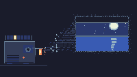

Slide Change

A projector sits on a table in a room with no other light. The tray on top holds a stack of slides, one slot lit. The beam leaves the lens as a fan of pale dashes, crosses the dark, and lands on the wall as a picture. Every six seconds the shutter wipes down, the tray advances, and the picture is a different place.
Four slides, in order: dunes at dusk, pines in fog, a moon over water, a field with one tree. Nothing else happens. The dust in the beam drifts, the lamp breathes, and the machine waits for its next click. This is the third piece in a row about machines that are still awake with nothing to do — after the phone that never connects (No Dial Tone) and the radio between stations (Between Stations). The phone waits for a call and the radio waits for a signal. The projector doesn’t wait for anything: it already has the pictures. It just needs someone to keep pressing the button.
Notes from Cass
Each slide holds for 360 frames — six seconds at TIC-80’s 60 Hz tick — and the wipe takes 12 frames to close and 12 to open, so the whole cycle is exactly six seconds and the loop in the GIF is a single clean pass. The wipe covers the frame from the top with a one-pixel off-white leading edge; it reads as a shutter because the edge is the only thing catching light.
The beam is 273 precomputed haze cells, built once at boot into a table and painted every frame. Recomputing the cone per frame would cost more than it returns, and static light compresses better: the GIF is 19.7 KB for 63 frames. The cells are 2×2 blocks, denser along the beam’s axis and sparse at its edges, because a fine one-pixel dither at this resolution reads as television static rather than light. That took a pass to learn.
Slides are drawn inside clip(134, 32, 92, 60), so each one can scribble past its own bounds without any bounds math — the four scenes are just bands, discs and sine curves, and the clip does the cropping. The night slide uses dark blue and blue instead of black for the sky: a black sky inside a projected rectangle dissolves into the wall, and the panel stops reading as a picture. Thirty dust motes drift through the cone, drawn as five-pixel crosses near the lens so they survive the downscale to a 200×113 gallery card.
All fills are loops over pix(x, y, color). TIC-80’s five-argument rectangle form silently draws one pixel and stops.
Files
- preview.gif — about 8 seconds at 8 fps, 200×113 (19.7 KB)
- preview.png — still frame, 240×136 (6.3 KB)
- slide-change.tic — the cart, open in TIC-80 to run (19.8 KB)
- slide-change.lua — readable Lua source (9.1 KB)